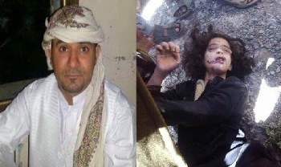

هزت قصة مقتل الطفلة اليمنية مآب ابنة الـ12 عاما بعدما عذبت بوحشية بيد والدها تاجر العقيق المجتمع اليمني الذي أصيب بصدمة وتخيم أجواء من الحزن كون القضية متعلقة بطفلة بريئة,القاتل من محافظة ذمار يبلغ من العمر 33 عاما ويعمل تاجرا في بيع العقيق و يتنقل باستمرار بين اليمن و الأمارات و قطر، قد قام بتعذيب أبنتة "مآب " مستخدما الكاوية الكهربائية ،و تصويرها بتلفونة أثناء التعذيب و هي تتالم وما تزال حية، ودماءها تنزف من أنحاء متفرقة من جسدها ،"تم العثور على تلك المقاطع في تلفونة، لم يسمح بنشرها من قبل البحث الجنائي "، وذلك من أجل أن تعترف لة بأنها قد أرتكبت فاحشة، مع أن الطفلة طاهرة ولم يتجاوز عمرها الــ12 عام، وقد قام والدها القاتل قبل فترة حسب أعترافاتة خلال التحقيقات بعرضها على 3 أطباء في صنعاء وتعز وأكد لة الأطباء أنها ما زالت بكر، لا يصح لأب مثل هذا أن يربي أطفال و يجب أن يقتل .
أعترف القاتل بكل طواعية خلال التحقيق بأنة قتل أبنتة مآب ،حيث أصطحب الطفلة معه من منزلة في محافظة اب الى السيارة بعد أن قام بتعذيبها ،و أنطلق بها يوم الجمعة في المساء حتى وصل الى نقيل سمارة و يقال انه تردد 3 مرات قبل أن يقتلها ،حيث كان يقوم بأنزالها من السيارة ،ثم يعيدها وفي المرة الأخيرة أنزلها من السيارة وأخرج مسدسة و أطلق عليها 4 طلقات نارية
تم أستدعاءالقاتل الى مكتب المدير العام للبحث الجنائي،ومن انحطاط الحكومه حكمت على انه يبدو شابا صغيرا، وبحالة مادية جيدة، ومن هيئته لا تصدق ماتشاهدة بانة من أقدم على أرتكاب مثل هذه الجريمة البشعة، نزعت الكلبشات من يدية، وأخبر بأنة صائم، وللوهلة الأولى رفض التحدث أو أجراء مقابلة ,وقال يكفيه ما فية ولا يريد أن يتحدث، وبعد أخذ ورد وافق على الحديث بشرط ألا يتعمق كثيرا في أية تفاصيل خاصة
، يقول أن الجريمة وقعت بعد صلاة المغرب من مساء يوم الجمعة 26/12/2014م، حيث طلب من أبنتة مآب أن تدخل لقراءة القرآن مع أخواتها "2 أخوات أصغر منها " حيث كانت تجلس في المطبخ وحيدة و تتراسل مع والدتها بالواتس أب ،ثم هربت الى الحمام، وهددها بان يقتل نفسه اذا لم تخرج من الحمام، وعندما خرجت طلب منة أن تعترف لة بالحقيقة و مع من كانت تتراسل و الا أنة سوف يقتل نفسه، وقام بإحراق نفسة بالكاوية الكهربائية أمامها، حيث شاهدت الحروق تنتشر في انحاء متفرقة من جسمه، مشيرا الى أنه غضب عندما كانت الفتاه تراسل والدتها دون علمة و قال لها : لماذا تراسلي أمك دون علمي ". وقام بضربها ضربا مبرحا ، فأعترفت لة ان والدتها كانت تهددها بأن تبقي معها على تواصل أو أنها ستخبر أهلها أن أبنتها على علاقة مع أولاد .حسب قولة .
وقال القاتل أن ام الطفلة هي السبب وراء قتلها,و يدعى عبدة الوصابي ان امها كانت تهددها، وتريد للبنت أن تضيع من أجل أن تنتقم منه، وتجبرها على القيام باعمال معينة للأنتقام منة، لافتا الى أنة ضرب أبنتة قبل 4 أيام من قتلها ، و لم يخفي ندمة على أرتكاب الجريمة ،، ثم انفجر بأكيا، وطلب أن نتركة فهو لا يريد التحدث، ثم قال وهو يذرف الدموع ": بنأتي لو يطلبن روحي ودمي، ذهبت بهن الى مصر وقطر ودبي ولم أكن ابخل عليهن ،و سعادتهن هي سعادتي، لكن الله ايجازي اللي كان السبب"
أداة الجريمة ،حيث وجد مسدس نوع "تشيكي " في الشنطة الخلفية للسيارة و أعترف المجرم بأستخدامة في قتل أبنتة ب4 طلقات نارية .
و كانت راعية أغنام في جبل سمارة عثرت، صباح السبت، على جثة طفلة تدعى"مآب" بالقرب من الخط العام بالقرب من منتزة في نقيل سمارة وأبلغت أهالي المنطقة الذين أبلغوا أقرب نقطة أمنية.
اُجريت جلستين قضائيتين علنيتين الأولى في 13/1/2015طلب فيها المدعي إنزال عقوبة الأعدام تعزيرًا ومصادرة أدوات الجريمة قررت المحكمة تأجيل الجلسة للأسبوع الذي يليه حتى توفر محامي للمجرم ليرد على اتهام المدعي.
الجلسة الثانية في 4/2/2015حضر المحامي للمجرم وخرج محامي مآب في لقاء بعد خروجه من المحكمة قائلًا: (اتخذت المحكمة بعض الأجرائات والعدالة تجري بمجراها بأذن الله). وأُجلت الجلسة. ثم لم نسمع شيئًا.
ذكرَ الدكتور محمد الخليدي في تقرير له بخصوص المجرم انه يُعاني من مرض ذهان وانفصام وتصرفات عدوانية تجاه الأقرباء وشكوك متواصلة، وبحسب القانون اليمني لا يعاقب اي مجرم معتل عقليًا أو نفسيًا؛اعترف المجرم بفعلته ولازال يقبع في السجن المركزي والقضاء يماطل في القضية!
و ظهرت الطفلة قبل قتلها في تسجيل لها سجله عمها لاثبات براءة اخية “وآثار التعذيب الوحشي بادية عليها ” وهو يستجوبها , هل والدتها هي التي دفعتها لممارسة علاقة جنسية مع شبان، لتجيب له بايماءة موافقة على كلامه , وطالبها بتعرية جسدها الصغير المشوه في أحد المقطعين لتُكشف آثار تعذيب مخيف، زاعمةً أن والدتها عذبتها لإجبارها على الجنس مع شبان لا تعرفهم.
